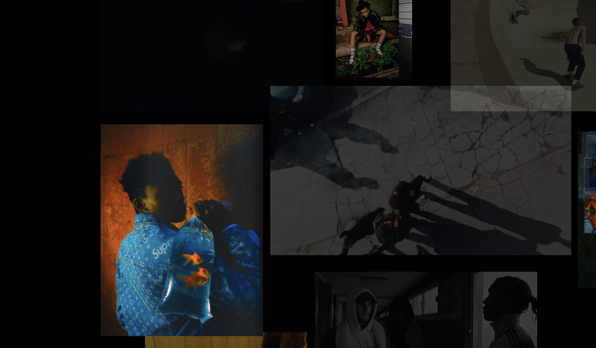
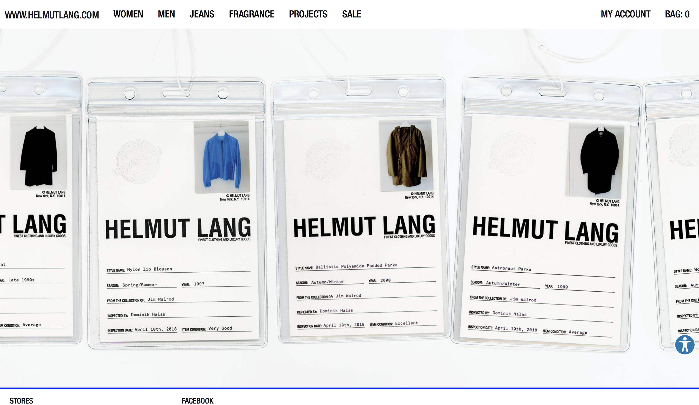

Tang Museum

- The purpose of this website is to introduce the information about Tang museum.
- The content includes necessary info about recent exhibitions and info about other activities Tang museum has.
- I like the navigation of this website because all the sections are very detailed in the first sight. The picture on the webpage is the focus but the texts that navigate different content are also clear and easy to find. I think this website functions really well as a site that used as a public page for people looking for necessary information about the museum.
Artist Dexter Navy

- This is the personal website of artist Dexter Navy.
- The content includes his works and his contact information.
- Personally I think the navigation of this website can be much better. It is hard to find out that the floating images are actually clickable when there are lots of texts on them. The navigations on the left side are also difficult to use.
Helmut Lang

- This is the website of clothing brand Helmut Lang.
- The website shows lookbooks and clothes that can be purchased online.
- I think this website is a good example of clear navigation especially when it comes to online shopping. It is really easy to find the specific clothes you are looking for based on the navigation on the top.